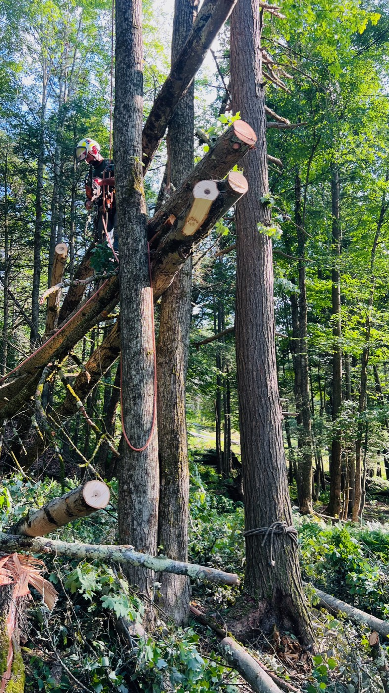
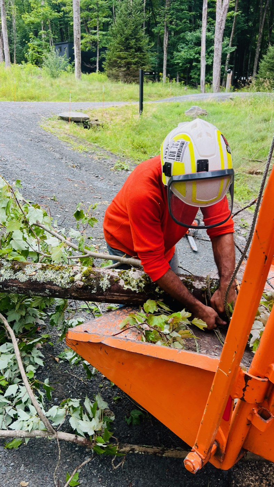
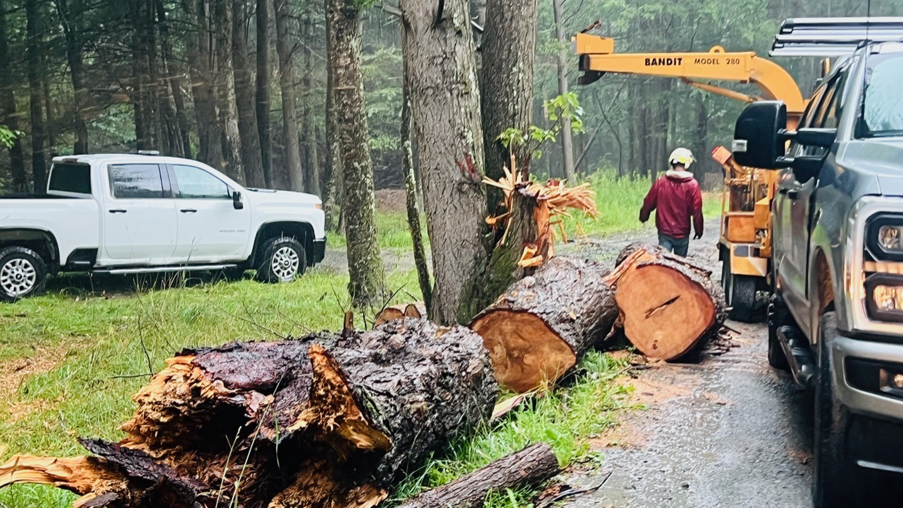
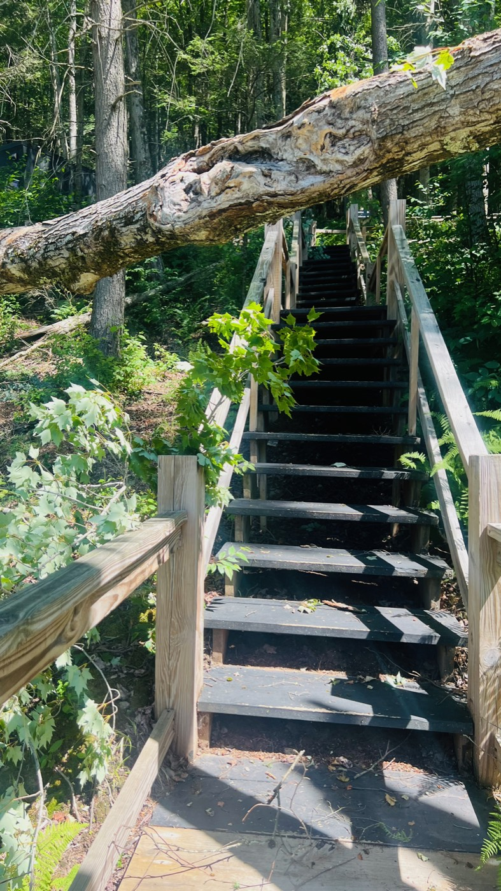
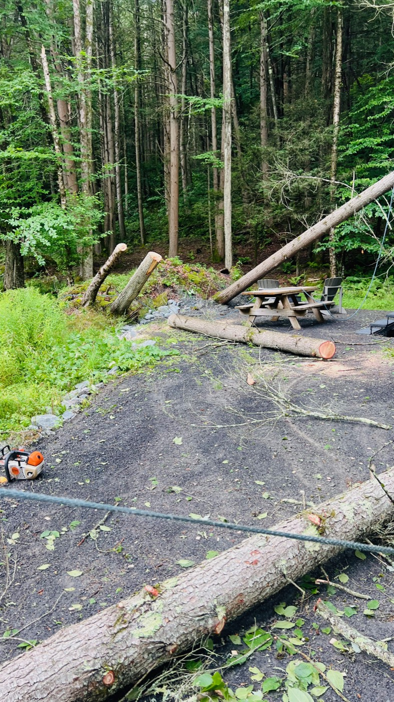

A modest proposal from the guys who just pulled forty trees off your cabins — and accidentally invented the best vacation in America.

A city person in the woods. Owns a $400 "technical shell." Has never held a technical anything. Calls every tree "an oak." Asks the crew what the chipper retails for, hears the number, and gets real quiet. We love them. They are our most renewable resource.
In July a storm dropped a small forest on your Western Catskills camp. You called us. We came up with a bucket truck, a chipper, a mini skid steer, and three guys who cannot believe this is a job.
Somewhere around day two — rigging a maple off a cabin roof while the sun came through the hemlocks — we noticed your guests watching us. Not politely. Longingly. These are people who paid real money to sit in a beautiful black box, put their phone in a pouch, and feel something. And there they were at the rope line, watching a chipper eat a brush pile like it was the moon landing. One of them applauded. Quietly. Into his oat-milk latte.
One week a season: Tree Guy Summer Camp. Citiots pay to spend a week "working" alongside a real, insured, professional tree crew on your property. Your hazard trees get handled. Your trails get cleared. Your firewood gets stacked so beautifully it goes on the website. And the citiots go home with calluses, one (1) knot, a trail name they will put in their dating profile, and the best story at every dinner party in Park Slope for the rest of their lives.
Read it again: they pay. To do our job. On your land. Tom Sawyer ran this exact play on a fence in 1876 and it remains undefeated. We are simply Tom Sawyer with a bucket truck and a waiver.
Knots, chipper, firewood, one supervised climb. Sleeps in a Postcard cabin like a person. Returns to Brooklyn unbearable in a whole new way.
Everything above, plus daily climb instruction and a turn on the mini skid steer grapple in an empty field with cones and zero witnesses. Flannel not included. Flannel will be worn anyway.
Our premium tier. You sit in a lawn chair with a cold drink and text the crew asking for photos of the work. Includes clipboard, whistle, and the phrase "guys, only emergency stuff." Someone has to supervise. It might as well be you.




Shot on location at your camp, July 2026, while doing this exact thing professionally. Zero citiots were harmed. None were available. Yet.
Under the bit, this is real: we're Second Nature Tree LLC, a fully insured New York tree company (GL + workers' comp; ISA/TCIA affiliated), and we just spent four days doing storm relief on this exact property — 52 hours portal-to-portal, forty-some trees off cabins, roads, and trails, zero property damage, zero injuries. Camp guests would never be near live cutting: climbing happens on a dedicated closed-course tree on doubled rope with a certified climber, chipper feeding is one-guest-at-a-time under direct supervision per ANSI Z133, and everyone signs the waiver of the century. Postcard gets its hazard-tree management and trail clearing done every season — and gets paid for it through the booking split. That's the whole trick: your maintenance budget becomes a revenue line, and your guests do the cardio.
Want the polished version with real numbers?
Doug Brown · Second Nature Tree LLC
info@peekskilltree.com · (914) 391-5233
Proof this isn't hypothetical: the full GPS-stamped photo & video timeline of the July 2026 storm job. · Tree Guy Summer Camp™ is trademarked in our hearts only. Pricing illustrative. The chipper is not a ride. "Citiot" is a term of endearment and legally we're sticking with that. Chipmunk, you know what you did.